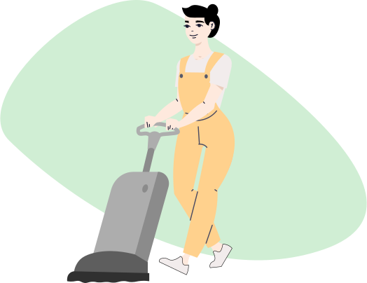

Commercial
Nettoyage de bureaux
Nous comprenons que la propreté et la présentation impeccable de vos bureaux sont essentielles pour créer une image professionnelle et accueillante de votre entreprise. Notre service de nettoyage de bureaux va au-delà du simple dépoussiérage et du nettoyage des surfaces. Nous nous assurons que chaque espace de travail est méticuleusement nettoyé, des bureaux aux salles de réunion, des espaces communs aux sanitaires. Nous utilisons des produits de nettoyage de qualité supérieure et respectueux de l'environnement, pour garantir une hygiène optimale. De plus, notre équipe compétente s'adapte à vos horaires de travail pour minimiser les perturbations dans vos activités quotidiennes. Faites confiance à notre service de nettoyage de bureaux pour maintenir un environnement de travail propre, sain et professionnel.
Voici quelques-unes des tâches incluses dans nos services de nettoyage de bureaux :
Aspiration des débris sur tous les sols et tapis
Lavage des sols durs
Élimination de la poussière sur les bureaux et les meubles
Essuyage des surfaces dures avec un désinfectant doux
Vidage des corbeilles et remplacement des sacs
Pulvérisation et nettoyage de toutes les surfaces en verre et des miroirs
Essuyage des interrupteurs, poignées de porte et luminaires
Nettoyage et désinfection des salles de pause et des toilettes
Utilisation d'un désinfectant en spray sur les toilettes, les portes, les lavabos et les appareils
Recharge des distributeurs de savon et des porte-serviettes en papier


nettoyage après construction
Après la fin des travaux de construction, notre service de nettoyage post-construction intervient pour vous offrir un espace impeccable et prêt à être utilisé. Nous comprenons que les résidus de construction, la poussière fine et les débris peuvent s'accumuler partout, ce qui nécessite un nettoyage en profondeur et minutieux. Notre équipe qualifiée utilise des techniques avancées et des équipements spécialisés pour éliminer tous les débris, nettoyer les surfaces, les murs, les sols et les vitres, et assurer une remise en état complète de l'espace. Nous sommes méticuleux dans notre travail et veillons à ce que chaque recoin soit soigneusement nettoyé et que le résultat final soit impeccable. Notre objectif est de vous fournir un espace post-construction propre, sécurisé et prêt à être occupé. Confiez-nous votre nettoyage après construction et bénéficiez d'un service de qualité supérieure qui mettra en valeur le travail accompli et vous permettra de profiter pleinement de votre nouvel espace.
Voici quelques-unes des tâches incluses dans notre service de nettoyage après construction :
Élimination des débris de construction
Dépoussiérage minutieux de tous les espaces
Nettoyage en profondeur des surfaces, y compris les murs, les sols et les vitres
Nettoyage des interrupteurs, des poignées de porte et des équipements
Désinfection des espaces sanitaires et des zones de pause
Utilisation de produits spécifiques pour éliminer les traces de construction
ClearView
ClearView : La référence en matière de services de nettoyage d'entreprise. Nous offrons une expertise exclusive et des consultations détaillées pour répondre aux besoins uniques de chaque client. Faites confiance à ClearView pour maintenir un environnement impeccable et bénéficier d'un service de qualité inégalée.
Suivez-nous
Les heures de travail
Lun - Ven: 8h00 - 17h00
Samedi: 9h00 - 13h00
Dimanche: Fermé
Contactez-nous
Vous pouvez nous contacter par email et par téléphone.
clearview@gmail.com
0656764378